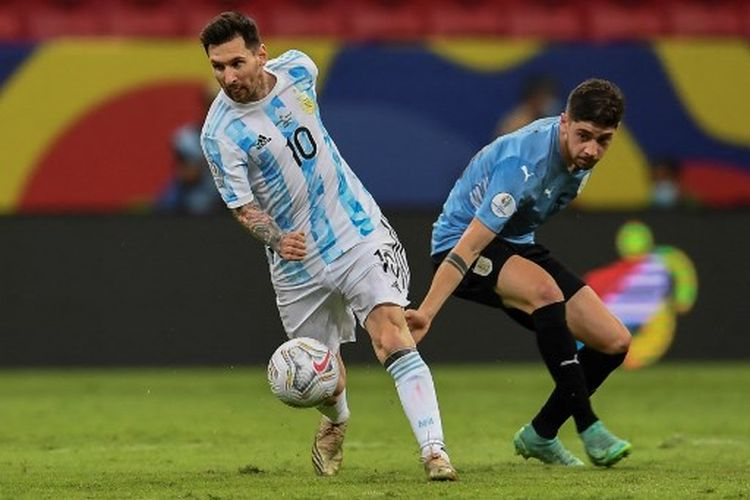

Piala Dunia 2022 Qatar,
Alasan Argentina dan Uruguay Bawa 900 Kg Daging
KOMPAS.com - Timnas Uruguay dan Argentina masing-masing akan membawa daging khusus sebanyak 900 kilogram ke Qatar untuk keperluan konsumsi tim selama Piala Dunia 2022. Hal itu dilakukan untuk membuat para pemain timnas Uruguay dan Argentina seperti merasa di rumah selama berkompetisi di Piala Dunia 2022 Qatar. Dikutip dari ESPN, Uruguay dan Argentina merupakan dua negara konsumen daging terbesar di dunia. Fakta itu tidak lepas dari tradisi Asados di kedua negara tersebut. Secara garis besar, Asados merupakan kegiatan memasak daging dan sosis di atas panggangan yang bisa disebut barbekyu. Demi menjamin pasokan daging untuk Piala Dunia 2022, Federasi Sepak Bola Uruguay (AUF) sudah bekerja sama dengan National Institute of Meat (INAC). Baca juga: Pendukung Argentina Rela Pinjam Uang ke Orang Tua demi Lihat Messi Preside INAC, Canrado Ferber, mengaku akan menjamin timnas Uruguay mendapatkan daging terbaik untuk agenda Piala Dunia 2022. "Teh (tradisional), asados, dan sepak bola merupakan bagian dari budaya Uruguay," kata Canrado dikutip dari ESPN. "Kami ingin memberi daging berkualitas dan alami secara berkelanjutan. Piala Dunia 2022 adalah waktu terbaik untuk melakukan itu," ucap Canrado menambahkan. Adapun Ignacio Alonso selaku Presiden AUF menyebut kerja sama dengan INAC terkait pasokan daging adalah salah satu bentuk dukungan federasi untuk membuat timnas Uruguay tampil maksimal selama Piala Dunia 2022.